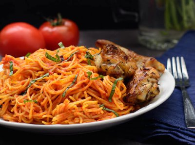

The continental spaghetti is a very simple yet delicious recipe. This versio relies on ton of veggies, beef liver, a mix of spices and chicken to savor the taste buds.

Ingredients
1 lb pack of spaghetti
2 3/4 cups chicken stock
5 large tomatoes
1 red bell pepper
1 large onion
1 tsp curry powder
1 tsp dried thyme
vegetable oil
salt to taste
Steps
Blend the tomatoes, onions, and peppers until smooth.
Boil down the tomato sauce on in a pot on medium- high heat until the sauce is about half the amount, and has thickened significantly to look like a paste. This takes about 15-20 minutes, depending on how high the heat is.
Be sure to stir the sauce occasionally to prevent it from burning.
Once the sauce is reduced, pour in the stock, oil, thyme, curry powder and bouillon. At this stage, taste the sauce and adjust for salt.
Add in the spaghetti, pushing it down or breaking it to fit into the pot.
Cover and allow to cook for 5 minutes on low-medium heat.
After 5 minutes, the pasta should be soft enough to stir. Stir, turn down the heat to low, and allow to cook for another 8-10 minutes.
After 8 minutes, stir, and the pasta should be cooked. If it is not, add in a splash (about 1/4 cup) of water and continue to cook for another 5 minutes.
If you choose to add basil, add it in at this stage, and then serve.